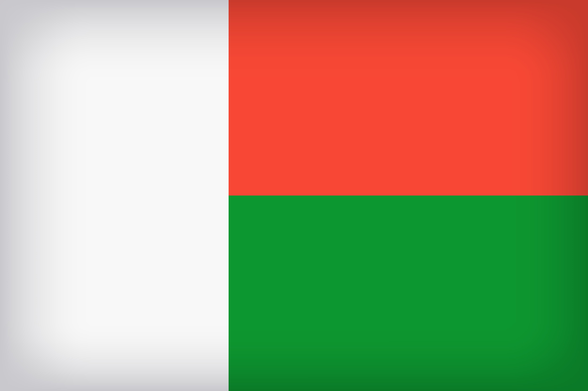

Miorafitiavana Harivelomanana
About Me
Greetings, I am Miora Harivelomanana. My family and I lives in Antananarivo Madagascar. My husband and I have a four years old daughter. We love spending time together including reading, traveling, doing outdoor activities.
Antananarivo, Madagascar
Antananarivo, often called Tana, is the capital and largest city of Madagascar. Located in the island’s central highlands, it sits on a series of hills surrounded by rice fields. The city is Madagascar’s political, economic, and cultural center, blending French colonial architecture, traditional Malagasy houses, and bustling modern life. Antananarivo is known for landmarks like the Queen’s Palace (Rova), its lively markets, and panoramic views over the highlands.